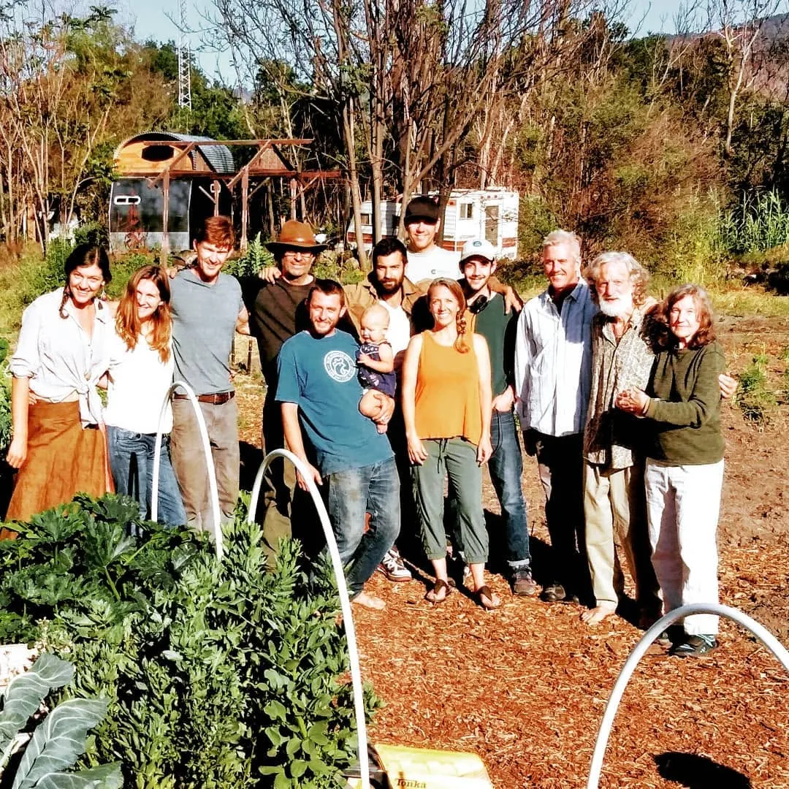
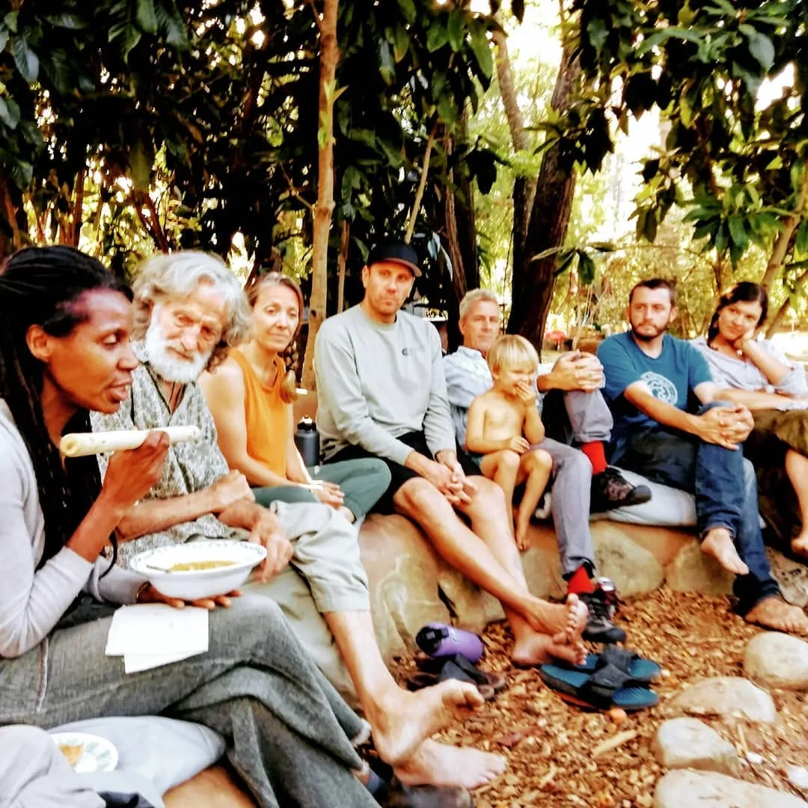
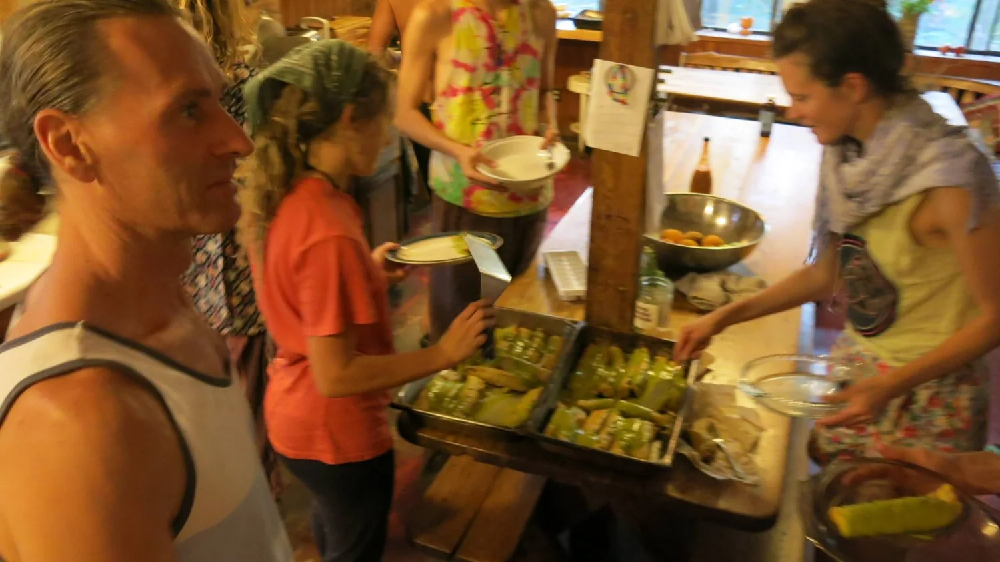
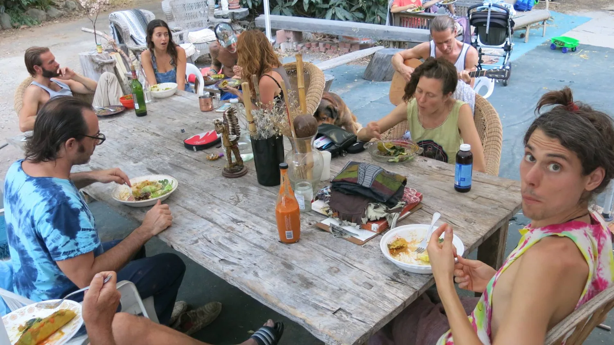
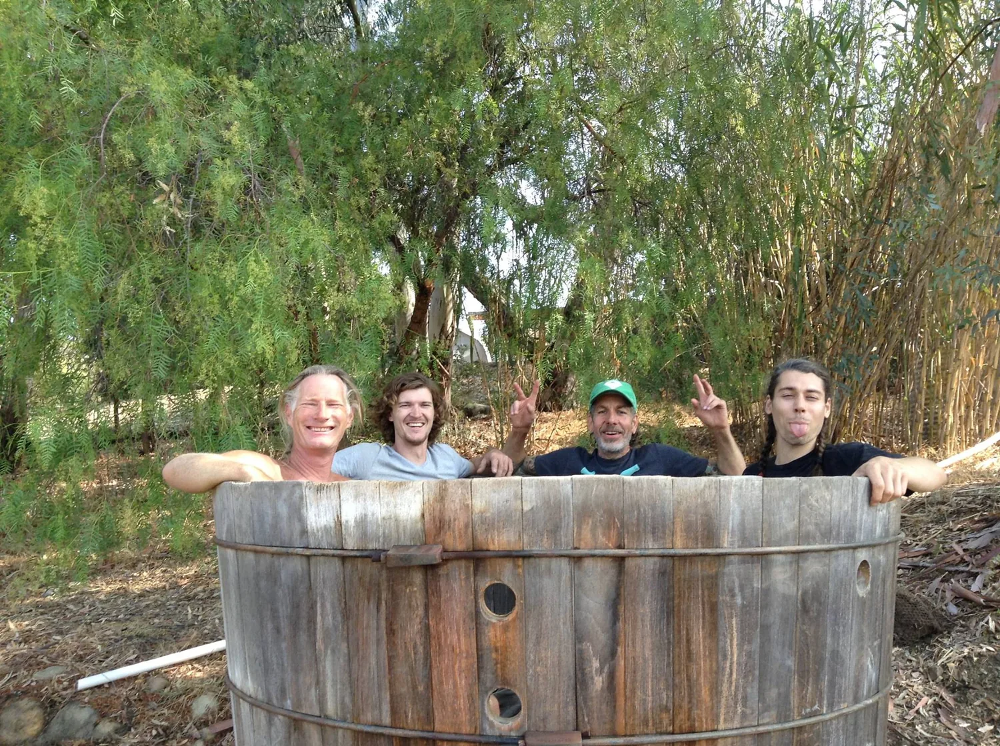

General community meetings
Every Thursday the community gathered in a circle, lit a candle, held hands and called in good intentions. Practical decisions were placed inside a ritual that reminded everyone why they had gathered.
Chapter 07 · People, culture and shared responsibility
The farm was shaped through meetings, meals, disagreements, celebrations and ordinary work carried out together. The social landscape was every bit as important as the physical one.

Practices of belonging
These reflections were written during the 2022 Permaculture Design Course and describe the community practices in use at that time.
Every Thursday the community gathered in a circle, lit a candle, held hands and called in good intentions. Practical decisions were placed inside a ritual that reminded everyone why they had gathered.
When mediation was needed, meetings followed a nonviolent communication format. The purpose was to hear what mattered beneath a disagreement and seek a workable resolution.
Heart circles were reserved for honoring one another’s gifts. Work and problems were set aside so attention could return to appreciation, relationship and the human beings inside the system.




Shared stewardship
Planting, mulching, moving materials and maintaining pathways were practical tasks. Done together, they also became ways of teaching, belonging and passing knowledge from one person to another.


Abundance is shared
At Full Circle, food moved through many hands: picked in the orchard, carried to the kitchen, eaten fresh, preserved, dried and placed on a communal table. The harvest was biological abundance made visible—and a recurring reason to work and celebrate together.
“Every week a new fruit ripens. All year long.”


Learning together
Beekeeping brought observation, patience and collective learning into one small place. A hive inspection became both ecological work and an outdoor classroom.


Governance as an evolving practice
Full Circle Farm began with a largely patriarchal structure. Bob Goddard, the farm’s owner, held final veto power, although the community still felt democratic and he was remembered as fair and accommodating toward people’s needs.
The community later moved toward sociocracy. By the time this reflection was written, it was experimenting with holacracy: a decentralized model in which people lead their own domains and carry responsibility for them.
I appreciated that decentralization. Others found the model confusing or difficult to apply fully, and there was a recurring pull back toward a more familiar central authority.
By 2022, Bob had retired from running the community and Jaya, then eighty-three, had also offered to step back from its most demanding responsibilities. Full Circle was again in transition, still searching for a durable form of self-governance.
The uncertainty was part of the design story. Social systems, like gardens, are never finished. They require observation, feedback, pruning, patience and the willingness to begin again.